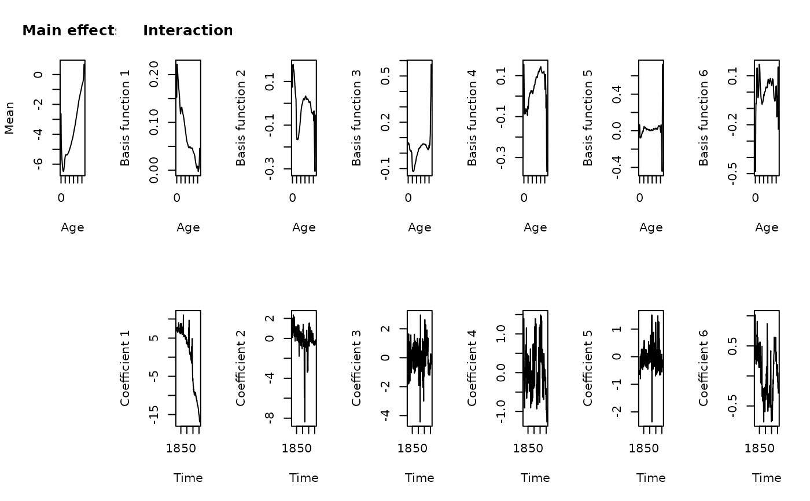
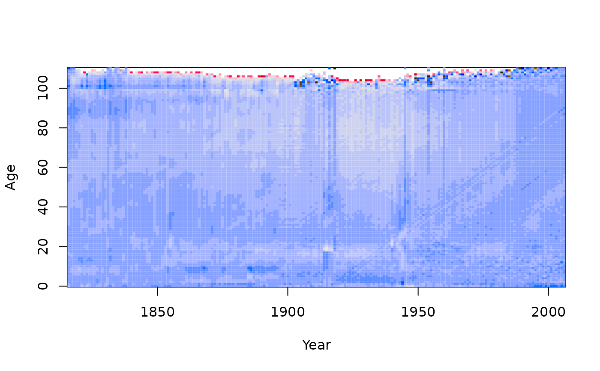

Fits a basis function model to demographic data. The function uses optimal orthonormal basis functions obtained from a principal components decomposition.
Arguments
- data
demogdata object. Output from read.demogdata.
- series
name of series within data holding rates (1x1).
- order
Number of basis functions to fit.
- ages
Ages to include in fit.
- max.age
Maximum age to fit. Ages beyond this are collapsed into the upper age group.
- method
Method to use for principal components decomposition. Possibilities are “M”, “rapca” and “classical”. See
ftsmfor details.- lambda
Tuning parameter for robustness when
method="M".- mean
If TRUE, will estimate mean term in the model before computing basis terms. If FALSE, the mean term is assumed to be zero.
- level
If TRUE, will include an additional (intercept) term that depends on the year but not on ages.
- transform
If TRUE, the data are transformed with a Box-Cox transformation before the model is fitted.
- ...
Extra arguments passed to
ftsm.
Value
Object of class “fdm” with the following components:
- label
Name of country
- age
Ages from
dataobject.- year
Years from
dataobject.- <series>
Matrix of demographic data as contained in
data. It takes the name given by the series argument.- fitted
Matrix of fitted values.
- residuals
Residuals (difference between observed and fitted).
- basis
Matrix of basis functions evaluated at each age level (one column for each basis function). The first column is the fitted mean.
- coeffs
Matrix of coefficients (one column for each coefficient series). The first column are all ones.
- mean.se
Standard errors for the estimated mean function.
- varprop
Proportion of variation explained by each basis function.
- weights
Weight associated with each time period.
- v
Measure of variation for each time period.
- type
Data type (mortality, fertility, etc.)
- y
The data stored as a functional time series object.
References
Hyndman, R.J., and Ullah, S. (2007) Robust forecasting of mortality and fertility rates: a functional data approach. Computational Statistics & Data Analysis, 51, 4942-4956. https://robjhyndman.com/publications/funcfor/
Examples
france.fit <- fdm(fr.mort)
summary(france.fit)
#> Functional demographic model
#>
#> Call: fdm(data = fr.mort)
#>
#> Region: FRATNP
#> Data type: mortality
#> Years in fit: 1816 - 2006
#> Ages in fit: 0 - 110
#>
#> Order: 6
#> Percentage variation due to basis functions: 93.8% 2.3% 1.6% 0.6% 0.4% 0.3%
#>
#> Averages across ages:
#> ME MSE MPE MAPE
#> -0.09913 0.05686 -Inf Inf
#>
#> Averages across years:
#> IE ISE IPE IAPE
#> 0.45441 0.73512 -1.66272 8.08544
#>
plot(france.fit)

plot(residuals(france.fit))
